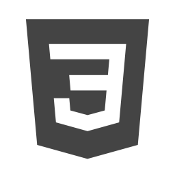

Compétences
Conception et développement Site Analyser, concevoir, évaluer. web.Rédaction de cahier de charge et écran de spécification, arborescence fonctionnelle.
Formateur en applications multimédia on-line et off-lineCoordinateur pédagogique.
Conception Réalisation et conduiteHTML5, CSS3, javaScript et DOM et PHP
Logiciels & Editeurs Web
Expériences professionelle ou stage
2013 : Concepteur Réalisateur du site E-Cognosys entreprise technologique basée en Inde.Développement Front-end : html5 Ecrans de spécification et story-board Zoning, validation W3C
2012 : Chef de projet technique sur la refonte du site Nattypeople Préparation du cahier de chargeEcrans de spécification Zoning, validation W3
Etudes
2000 : base de données avancées et programmation orientée objet Développement informatique etsystèmes d’informations : CNAM de Paris.
1998 : Licence multimédia : Université Paris XIII. POO et algorithmes
Activité Extra professionnelles
Voyages, ciné ..